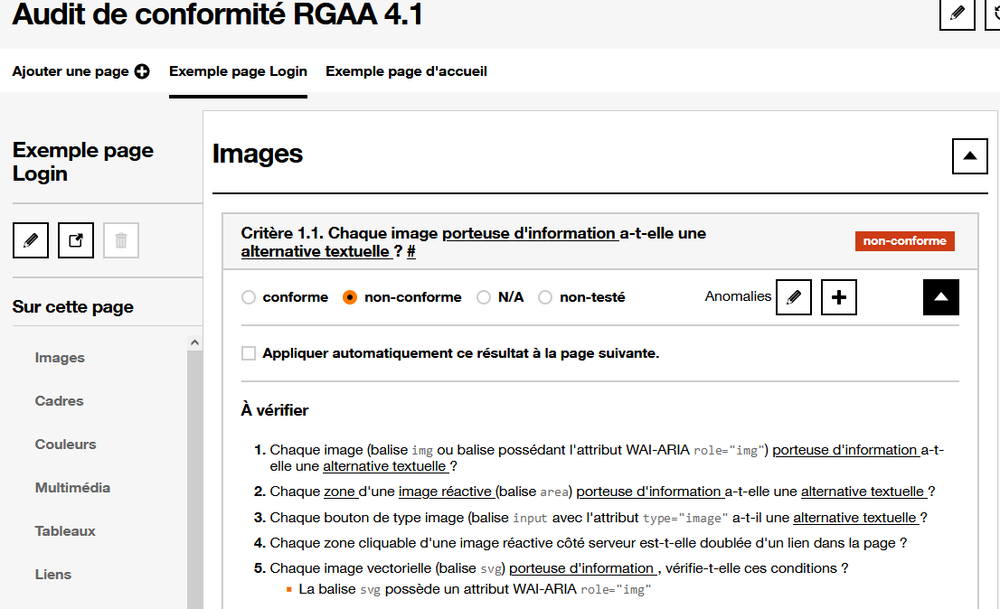

Nouveautés sur la Va11ydette
Thématiques associées :- Web
- Débutant
Date de parution
La Va11ydette permet de réaliser des audits sur le référentiel WCAG et d'obternir un pourcentage de conformité.
Pas mal de changement ont été faits sur la Va11ydette, on va vous faire un récapitulatif.
La nouvelle checklist RGAA est disponible #
Vous l'attendiez tous, elle est enfin là !!!
La checklist basée sur le référentiel RGAA est disponible sur la Va11ydette.
Vous pouvez maintenant auditer un site, en regardant les 106 critères du RGAA.
Pour tous les critères, les liens redirigent vers le glossaire officiel du RGAA.
À la fin de votre audit, vous aurez accès au pourcentage de conformité globale.
Vous aurez aussi la possibilité, d'exporter votre audit au format excel, afin de restituer au projet toutes les anomalies relevées.
Commencez votre audit sur la checklist RGAA

Ajout des critères de bonnes pratiques sur la checklist WCAG web #
Des nouveautés sont aussi présentes sur la checklist WCAG Web.
Précedement il existait deux checklist, une pour faire des déclarations et la deuxième permettait de faire des audits un peu plus poussés.
Nous avons décidé de supprimer la checklist d'audit afin de se concentrer sur une seule grille d'audit.
Il est maintenant possible d'activer les critères de bonnes pratiques afin de rendre notre site internet le plus accessible possible.
Actuellement 7 critères de bonnes pratiques ont été ajoutés, mais d'autres seront ajoutés dans le futur.
Vous voulez contribuer ou proposer des critères de bonnes pratiques ? Faites le sur le Git Hub de la Va11ydette.